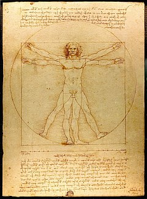
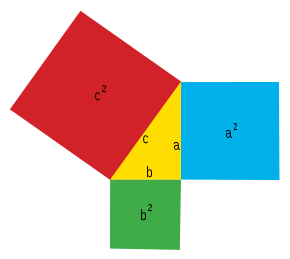

Sequência Fibonacci

Na matemática, a Sucessão de Fibonacci (também Sequência de Fibonacci), é uma sequência de números inteiros, começando normalmente por 0 e 1, na qual, cada termo subsequente corresponde à soma dos dois anteriores. A sequência recebeu o nome do matemático italiano Leonardo de Pisa, mais conhecido por Fibonacci, que descreveu, no ano de 1202, o crescimento de uma população de coelhos, a partir desta. Esta sequência já era, no entanto, conhecida na antiguidade
Proporção Áurea
Proporção áurea, número de ouro, número áureo, secção áurea, proporção de ouro é uma constante real algébrica irracional denotada pela letra grega PHI, em homenagem ao escultor Phideas (Fídias), que a teria utilizado para conceber o Parthenon, e com o valor arredondado a três casas decimais de 1,618.
Teorema de Pitágoras
O teorema de Pitágoras é uma relação matemática entre os comprimentos dos lados de qualquer triângulo retângulo. Na geometria euclidiana, o teorema afirma que: “Em qualquer triângulo retângulo, o quadrado do comprimento da hipotenusa é igual à soma dos quadrados dos comprimentos dos catetos."